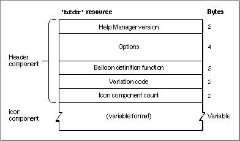
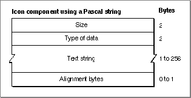
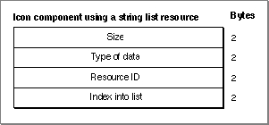
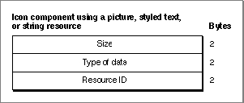
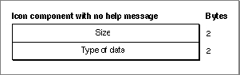

The Finder Icon Help Resource
The Help Manager displays default help messages for all Finder icon types. By creating a Finder icon help override resource, you can provide your own help message for the Help Manager to display when the user moves the cursor over your non-document icons. A Finder icon help resource is a resource of type'hfdr'. An'hfdr'resource must have a resource ID of -5696.The format of a Rez input file for an
'hfdr'resource differs from its compiled output form. This section describes the structure of a Rez-compiled'hfdr'resource. If you are concerned only with creating'hfdr'resources, see "Overriding Help Balloons for Non-Document Icons" on page 3-78 for a detailed description of how to use Rez input files to create an'hfdr'resource.An
'hfdr'resource consists of a header component and one icon component.
Figure 3-41 shows the general structure of a compiled'hfdr'resource.Figure 3-41 Structure of a compiled Finder icon help (
'hfdr') resource
If you examine a compiled version of an'hfdr'resource, you find that the header component consists of the following elements:The structure of the icon component depends on the identifier specified for that component. The identifiers used in a Rez input file are described in "Specifying the Format for Help Messages" on page 3-21.
- Help Manager version. The version of the Help Manager to use. This is usually specified in a Rez input file with the
HelpMgrVersionconstant.- Options. The sum of the values of available options, described in "Specifying Options in Help Resources" beginning on page 3-22.
- Balloon definition function. The resource ID of the window definition function used for drawing the help balloon. The standard balloon definition function is of type
'WDEF'with resource ID 126; this can be specified by the number 0 in the Rez input file.- Variation code. A number signifying the preferred position of the help balloon relative to the hot rectangle. The balloon definition function draws the frame of the help balloon based on the variation code specified here. The eight variation codes and how they affect the standard balloon definition function are illustrated in Figure 3-4 on page 3-9.
- Icon component count. The value 1, because only one icon component can be defined in this resource.
Figure 3-42 shows the structure of an icon component that stores its help message as a Pascal string within the
'hfdr'resource itself.Figure 3-42 Structure of an
'hfdr'component compiled with theHMStringItemidentifier
If you examine a compiled version of an'hfdr'resource, you find that a component identified in a Rez input file by theHMStringItemidentifier consists of the following elements:Figure 3-43 shows the structure of an icon component that specifies its help message as a text string stored in a string list (
- Size. The number of bytes contained in this component.
- Type of data. The value 1 is specified here when the help messages are stored as a Pascal string within this component.
- Text string. The help message that the Help Manager displays when the user moves the cursor over the icon.
- Alignment bytes. Zero or one bytes used to make the previous text strings end on a word boundary.
'STR#') resource.Figure 3-43 Structure of an
'hfdr'component compiled with theHMStringResItemidentifier
If you examine a compiled version of an'hfdr'resource, you find that a component identified in a Rez input file by theHMStringResItemidentifier consists of the following elements:Figure 3-44 shows the structure of an icon component that specifies its help message in a picture (
- Size. The number of bytes contained in this component.
- Type of data. The value 3 is specified here when the help messages for this component are stored in string list (
'STR#') resources.- Resource ID. The resource ID of an
'STR#'resource.- Index into the string list resource. A number used as an index to a particular text string within the
'STR#'resource. The Help Manager displays this text string for the help message.'PICT') resource, in styled text ('TEXT'and'styl') resources, or in a string ('STR ') resource.Figure 3-44 Structure of an
'hfdr'component compiled with theHMPictItem,HMTEResItem, orHMSTRResItemidentifier
If you examine a compiled version of an'hfdr'resource, you find that a component identified in a Rez input file by either theHMPictItem,HMTEResItem, orHMSTRResItemidentifier consists of the following elements:Figure 3-45 shows the structure of an icon component that doesn't specify a help message.
- Size. The number of bytes contained in this component.
- Type of data.
- The value 2 is specified here when the help message for this component is stored in a
'PICT'resource.- The value 6 is specified here when the help message for this component is stored as styled text--that is, in both
'TEXT'and'styl'resources.- The value 7 is specified here when the help message for this component is stored in an
'STR 'resource.- Resource ID.
- The resource ID of a
'PICT'resource when the value 2 is specified as the type of data. The Help Manager displays the picture stored in this resource for the help message.- The resource ID common to both a
'TEXT'and an'styl'resource when the value 6 is specified as the type of data. The Help Manager displays the styled text specified in these resources for the help message.- The resource ID of an
'STR 'resource when the value 7 is specified as the type of data. The Help Manager uses the text string stored in this resource for the help message.Figure 3-45 Structure of an
'hfdr'component compiled with theHMSkipItemidentifier
If you examine a compiled version of an'hfdr'resource, you find that a component identified by theHMSkipItemidentifier consists of the following elements: